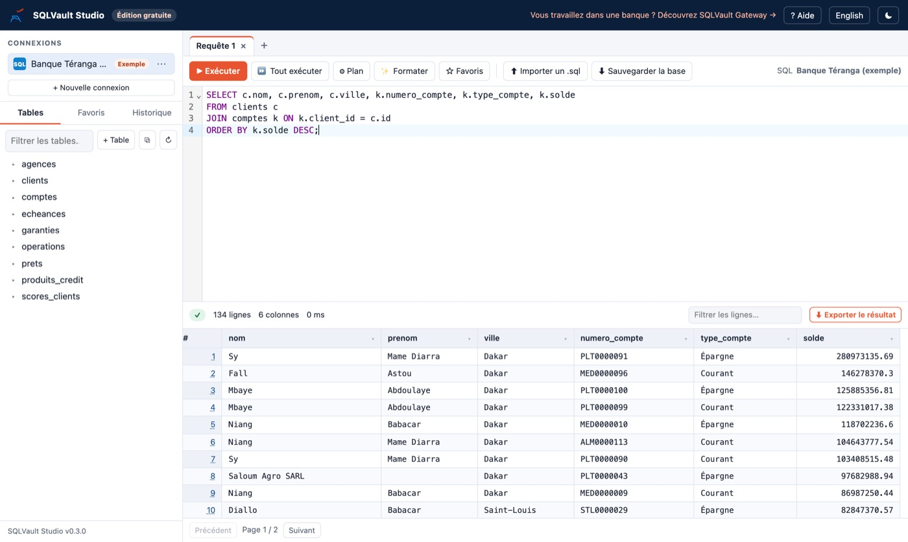

Direct access to production
Analysts, developers and contractors connect to databases with tools installed on their workstations. Everyone sees everything, including account and card numbers.
Secure access to banking databases
SQLVault Gateway is the single, controlled path between your teams and the bank's databases. Everyone sees only what they need, no change goes through without a second approval, and every access leaves a trace that cannot be erased.

Works with your databases as they are
The problem
Analysts, developers and contractors connect to databases with tools installed on their workstations. Everyone sees everything, including account and card numbers.
One urgent fix, one missing condition, and thousands of production rows are changed without anyone having approved it.
During an audit or an inspection, it takes a long time, if it is possible at all, to say for certain who accessed what, when and from which workstation.
Before / after
The solution
Sensitive data (IBANs, cards, balances, contact details) is masked automatically according to each person's role, including in Excel exports. Nine masking modes, including the PCI DSS card format.
Every data correction, like every new index or table to optimise a database, becomes a justified request, approved by a second person before it runs. Nobody approves their own request.
Dropping a table, updating without a condition, stacked queries, injection patterns: the query is blocked before it reaches the database, with a clear reason and a security alert.
Hand-made extracts are replaced by reports with parameters (account, period…), in Excel or PDF, run on demand or on schedule, approved by a manager and always masked.
Every access is written to a signed, chained audit log: who, what, when, from which workstation, with which role. A single altered line is detected.
Autocompletion, table explorer, execution plans, shared favourites, exports: your teams keep a comfortable way of working, with no SQL client on their workstations.
Request flow
The query is read before it reaches the database. Forbidden operations are blocked.
A read runs immediately. A change goes to dual approval.
Sensitive columns are masked in the result, according to the person's role.
The query, accepted or refused, is written to the chained audit log.
Demo
A 90-second overview (in French, with subtitles), filmed on Banque Téranga, a fictitious demo bank.
Who it is for
Designed for banks, SQLVault Gateway is also suited to payment service providers (PSPs) and fintechs, which face the same customer data protection requirements.
Operational and reputational risk under control, and demonstrably so to regulators and auditors.
One access path to the databases, no SQL client to maintain on workstations, deployed as a Docker container.
Masking controlled by security, real-time alerts, access reviews exportable to Excel.
Useful data, reports that arrive on their own, and a complete history a few clicks away.
Security and deployment
SQLVault Gateway is installed on a server inside the bank. Workstations reach it over HTTPS from a web browser. The databases are opened only to the SQLVault Gateway server, through technical accounts with limited rights.
Read the IT / CISO deployment note (French) →Pilot
A team from the bank uses SQLVault Gateway on a test database. No production data, and no current tool is switched off.
Server, test databases, roles, masking rules approved by the CISO.
Users and administrators trained, first logins, first requests.
Teams work in the tool; the CISO runs their test scenario.
Criteria measured, restore tested, recommendation delivered. The bank decides.
Documents
Free · students and developers
Complete and unlimited, installed on your computer. MySQL, MariaDB, PostgreSQL, SQL Server, Oracle and SQLite, a one-click MySQL or PostgreSQL server, and a sample banking database to practise on. Built in Go: lightweight (under 30 MB) and fast.

From the command line:
curl -fsSL https://raw.githubusercontent.com/sqlvaultgateway/sqlvault-studio/main/install.sh | shirm https://raw.githubusercontent.com/sqlvaultgateway/sqlvault-studio/main/install.ps1 | iexFrequently asked questions
No. A recent browser is enough. SQLVault Gateway is installed on a server inside the bank and used over HTTPS.
No. The tool is hosted in your infrastructure, and DEF TECH does not need access to your data, including during the pilot.
Yes, on the databases where the bank allows it. Creating a table or an index, adding a column or refreshing statistics goes through the same dual approval as a data change, and runs without blocking production: if the table is busy, the change is abandoned instead of making users wait. Dropping a table, emptying it or altering a column is always refused.
Oracle, SQL Server, PostgreSQL, MySQL and MariaDB, with or without TLS encryption. The same screen and the same rules apply to all of them.
Analysis and masking add a few milliseconds. Large results are streamed, and full exports are produced on the server.
Routine optimisations (indexes, work tables, statistics) can go through SQLVault Gateway, with dual approval. Application migrations and emergency access go through dedicated, recorded channels (bastion host, password vault). The IT / CISO note describes the full set-up.
Yes. Designed for banks, it meets the same needs at payment service providers (PSPs), e-money institutions and fintechs: card and account data masked, changes approved by a second person, proof of access for audits and regulators.
Four weeks on a test database, with 5 to 10 users and success criteria agreed on day one with your IT department and your CISO.
A 30-minute online demo or a 4-week pilot in your own environment: write to us and we will get back to you quickly.